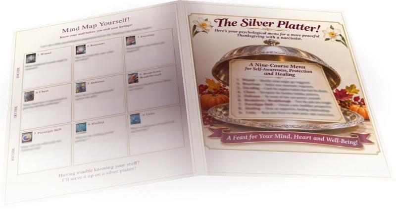
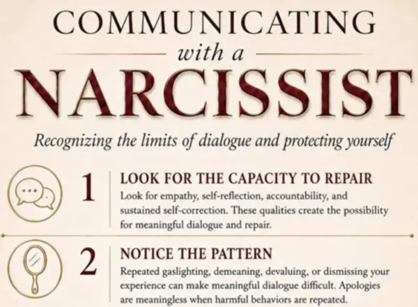
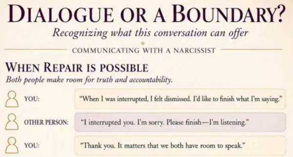
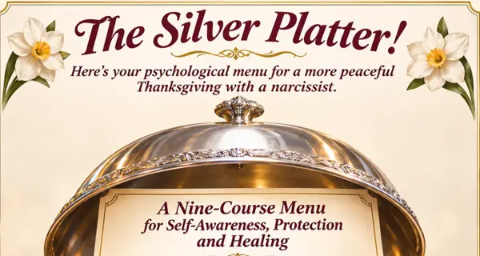

The booklet · $9.99
How to talk to a narcissist without blowing up.
Thanksgiving Feuding: How to Survive Thanksgiving Dinner with a Narcissist. An interactive Be The Cause® mini-dossier by Dr. Judy Rosenberg, Licensed Clinical Psychologist.
“I'm sure you're struggling with how to talk to your narcissist. It's almost impossible. But here are ways to recognize if you could or can't make progress.”
$9.99
10-page interactive PDF
Read it on your phone or print it
Costs less than one more argument.
Checkout opens soon.
By Dr. Judy Rosenberg, Licensed Clinical Psychologist, creator of the Be The Cause® Mind Map. As seen on CBS, CNN and HuffPost.
A look inside
Ten pages. One family dinner.

What's inside
Know yourself first. Then decide: a dialogue, or a boundary.
- Know Thyself. The nine-panel Be The Cause® Mind Map.
- Mind Map Yourself. A worksheet to spot what might get triggered.
- The Silver Platter. A nine-course menu for self-awareness, protection and healing.
- Communicating with a Narcissist. Six steps, from the capacity to repair to your level of contact.
- Dialogue or a Boundary? Word-for-word examples for both.
- Your Communication Menu. Calm replies to criticism, gaslighting, guilt trips and more.
- Bonus. A one-minute video from Dr. Judy.
“State a boundary, not a character judgment.”



“I've tried talking. It never works.”
Dr. Judy: “I know how hard it is to talk to a narcissist, because I've tried it myself.” The booklet starts there. It helps you see whether a conversation can go anywhere at all, before you spend more of yourself on it.
Will it tell me to confront them?
No. If repair is not possible, it shows you how to state a boundary and end the conversation. In its own words: “You do not have to keep explaining yourself or obtain agreement to end an interaction.”
Is it only for Thanksgiving?
It is built around one family dinner. The same tools apply to any gathering or hard conversation with a narcissist.
Is this therapy?
No. It is an educational booklet, not therapy or a diagnosis. If you are in crisis, call or text 988.